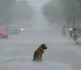

De: La Frikipedia, la enciclopedia extremadamente seria.
De: La Frikipedia, la enciclopedia extremadamente seria. De: La Frikipedia, la enciclopedia extremadamente seria.
|  | Abandonado
Este artículo marcado como {{{1}}} lleva más de un mes sin que alguien lo edite, así que eres libre de modificarlo si sientes que puedes mejorarlo. Considera también quitar esta plantilla o reemplazarla por otra más específica. |
La temporada 2014 de GP2 es 10ª temporada de la Ge Pedos que está debajo de la Formula Ano llena de pringaos pilotos novatos que intentarán luchar a muerte hacerse mierda contra lo que sea con el título.
Esta temporada continuarán usando los monoplazas supuéstamente de tercera generación (están desde 2011) que según habían dicho se dejaría de usar en 2013, echos por el chatarrero de la esquina, el GP2/11 que se seguiran usando por otros tres años.
| Ronda | Circuito | País | Fecha | |
|---|---|---|---|---|
| 1 | Carrera larga | Circuito Intencional de Bahrein | Varein | 5 April |
| Carrera corta | 6 April | |||
| 2 | Larga | Circuito de Katalonea | |
10 de Mayo nesa |
| Corta | 11 de Mayo nesa | |||
| 3 | Larga | Circuito de Monte Carlitos | MONA COmpany | 23 de Mayo |
| Corta | 24 de Mayo nesa | |||
| 4 | Larga | Circuito |
|
21 de J-uña |
| Corta | 22 de J-uña | |||
| 5 | Larga | Circuito de Platas tono | Reino Hundido | 5 de Julio Cesar |
| Corta | 6 de Julio Cesar | |||
| 6 | Larga | Hack en hel ring | |
19 de Julio Cesar |
| Corta | 20 de Julio Cesar | |||
| 7 | Larga | Anillo Hungaro | |
26 de Julio Cesar |
| Corta | 27 de Julio Cesar | |||
| 8 | Larga | Circuito en el SPA de FRAN, hay COca y (R)CHAMPagneS | |
23 de Agustus Glup |
| Corta | 24 de Agustus Glup | |||
| 9 | Larga | Autodromo Nazionale Monza | |
6 de Septiembre |
| Corta | 7 de Septiembre | |||
| 10 | Larga | Сочи Международный Улица цепи | |
11 de Octobre |
| Corta | 12 de Octobre | |||
| 11 | Larga | Ya Marinero! Circuit | Abuelo Dabhid / Emiratos sabor a Jarabe Unidos | 22 de Noviembre |
| Corta | 23 de Noviembre | |||
| Posición | 1º | 2º | 3º | 4º | 5º | 6º | 7º | 8º | 9º | 10º | Pole | V. rápida |
|---|---|---|---|---|---|---|---|---|---|---|---|---|
| Pu(n)tos | 25 | 18 | 15 | 12 | 10 | 8 | 6 | 4 | 2 | 1 | 4 | 2 |
| Posición | 1º | 2º | 3º | 4º | 5º | 6º | 7º | 8º | V. rápida |
|---|---|---|---|---|---|---|---|---|---|
| Pu(n)tos | 15 | 12 | 10 | 8 | 6 | 4 | 2 | 1 | 2 |
|
Autor(es):